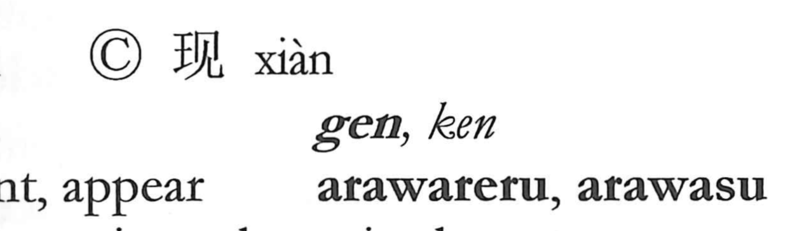

現

Kun: arawareru, arawasu, utsutsu | On: gen
appear ・ present ・ reality
Explanation
Shirakawa understands 現 as a later phono-semantic character modeled on 顕 (顯). The left element 王 represents the jade bead 玉, an object believed to hold spiritual potency; when hung with cords, it serves as a vessel for a divine presence. 顕 depicts one bowing in reverence before this consecrated jade, at which the numinous power rises and reveals itself. In 現 the component 見 provides the sound, and the graph came to be used in place of 顕 with the sense “to show itself, to appear.” From this, utsutsu “reality” is understood as the very manifestation of a spirit within the visible, tangible world.